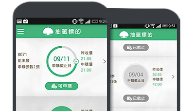
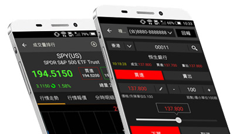

證券公司投資商品選擇
為了在不景氣中規劃出未來的願景與生活，如何讓辛苦存下的錢能夠有更好的增值，是每個人在出社會之後需要學習的重要課題，與其將辛苦存下來的錢隨便投資或放在銀行領很少的利息，不如將錢投資在具有高度競爭力與獲利能力的公司去幫忙賺錢，只要去購買這些上市上櫃公司的股票（Stock），就能夠讓每個人有成為這家公司“老闆”的機會。以下簡單說明股票買賣費用計算及商品選擇：
投資股票費用計算
股票交易的盈虧其實不限於一般認定的買進價扣除賣出價的差額，其中還會有給證券商的手續費和上繳給政府的證券交易稅這兩項費用，雖然這兩筆費用不高，但過度的頻繁交易也會造成損失。
股票與零股的買賣費用、手續費、證交稅計算方式：
| 買進時間 | 買進數量限制 | 費 用 | 手續費 | 證交稅（買進股票時不需支付） | |
|---|---|---|---|---|---|
| 股票 | 營業日 09:00-13:30 |
每次購買最少1張，即 1,000股 |
股價×1,000股×買賣張數 | 股價×1,000股×0.1425%×買賣張數 | 賣出成交金額×1,000股×0.3%×賣出張數 |
| 零股 | 營業日 13:40-14:30 |
1股至999股，不限股數 | 股價×買賣股數 | 股價×0.1425%×買賣股數 | 賣出成交金額×0.3%×賣出股數 |
註：若當次交易手續費低於20元，一律以20元做為計算，但每家證券商略有不同
股票抽籤/競價拍賣
股票抽籤就是俗稱的「新股抽籤」、「新股申購」、「股票申購」，通常只要去抽體質和基本面不錯的新上櫃或上市公司，大部分股價當天就會比抽到的價錢高出不少。不過，股票抽籤的資訊大多公佈後沒多久就會進行抽籤，沒特別留意時間的話，基本上是無法參與這樣的投資活動。而傳統參與股票抽籤的方式，就是透過營業員通知或自行到證交所網站查詢，其實是非常不方便的。不過，現在已經有證券商提供股票抽籤APP追蹤抽籤標的、抽籤提醒，甚至可以透過即時通訊軟體分享抽籤訊息給好友，只要一有消息就會從手機推播接收到完整的抽籤訊息，不但節省資料查詢時間，也能夠花很少的心思看到最多的資訊。
另政府自105年重新調整承銷制度，將原本詢價圈購制度改為競價拍賣的方式辦理，並且一律在網路進行投標作業，投資人必須自己用電腦連線到證交所【有價證券競價拍賣系統】參與投標。整體來說，新制的競價拍賣制度比舊制度更具公平性，不僅降低承銷商作業與時間上的成本，也提升交易的安全性。隨著承銷競拍新制上路，券商們分別在官網上進行宣導，有些券商則直接在APP上提供競拍標的通知、投標金額試算、繳款提醒等服務，幫助投資人省去自己動手計算費用的時間。
註：1.募資金額在4億元以下或文創類股不適用承銷競價拍賣新制
2.有價證券競價拍賣系統：https://scas.twse.com.tw/SCAS/
指數股票型基金
全名為指數股票型證券投資信託基金（Exchange Traded Funds, ETF）；簡單來說，就是將各種不同的指數（像台股加權指數、金融指數、電子指數）進行證券化，變成類似於股票的概念。而這樣的投資商品，可以讓投資人不用自行買進一堆股票去分散風險，而是透過買進一檔ETF後，便具有該指數所有股票的分散投資效果，此類股票通常為國內金融單位發行。
（給新手的建議：買ETF的手續費和保管費不像買一般的基金這麼高，可降低不少投資成本且風險是被分散的）
海外複委託
如果覺得當前台灣股市不是很適合投資，也可以嘗試將資金轉投入到其他的國際市場上進行投資，尤其是美股和港股，更是全球資金重要的投資標的。
而複委託（Sub-brokerage）的投資概念，其實就是透過國內券商委託下單，再由國內受委託的券商委託國外券商向國外股市進行購買股票或投資商品的行為。然而，很多投資朋友會覺得投資國外股票很麻煩，或是有看不懂英文的問題，但其實只要慎選有提供中英文輔助說明、休假日推播的複委託APP，以及有在辦理複委託業務的證券公司，基本上並不會很困難，就算不投資海外股票，也可以藉由複委託APP，更理解國際金融市場上目前的主流趨勢是什麼。
（給新手的建議：先操作台股，熟悉後再試試看海外股票會比較適合！）